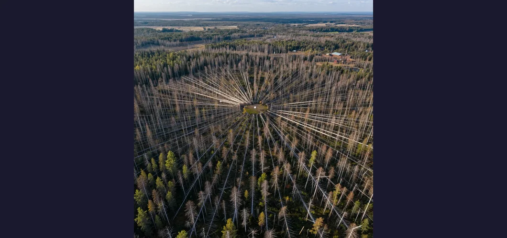
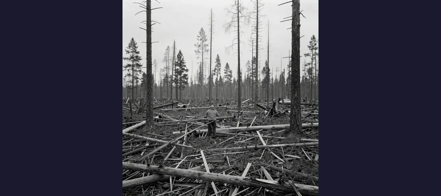
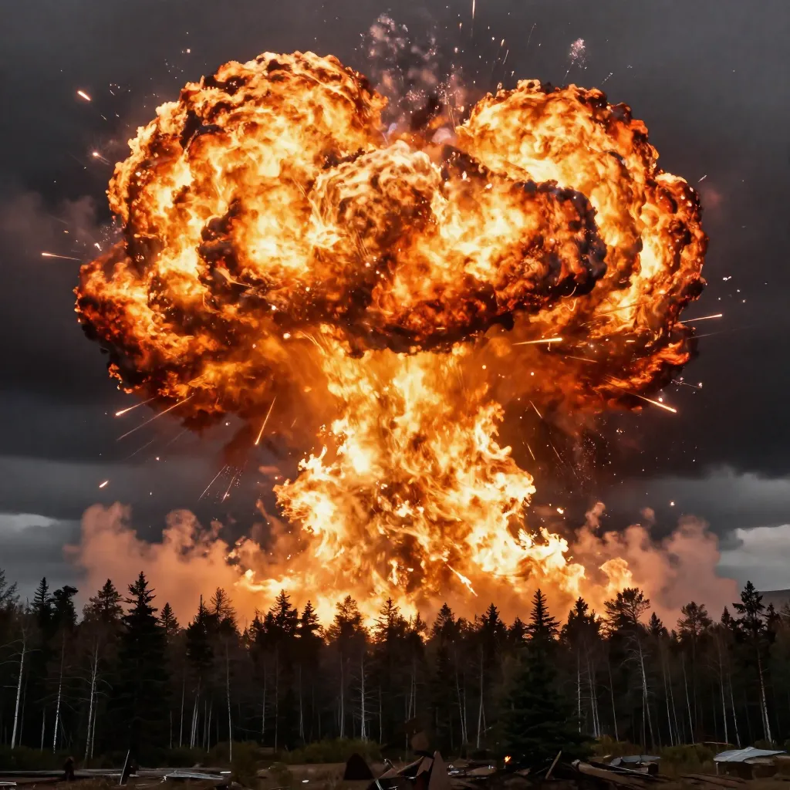

The Tunguska Event: The Morning the Sky Exploded Over Siberia

The Tunguska devastation zone in Siberia. On June 30, 1908, something exploded in the sky with the force of 1,000 Hiroshima bombs, flattening 80 million trees across 830 square miles.
On the morning of June 30, 1908, at approximately 7:17 AM local time, the sky over a remote stretch of Siberian forest near the Podkamennaya Tunguska River split open. What appeared first as a blinding column of light — brighter than the sun, described by some witnesses as a "second sun" — streaked across the sky and then exploded with a force estimated at between 10 and 50 megatons of TNT. That is roughly 1,000 times the power of the atomic bomb dropped on Hiroshima. The blast flattened approximately 80 million trees over an area of 830 square miles (2,150 square kilometers) — a zone of destruction larger than the area of many major cities. Reindeer herds were incinerated. Indigenous Evenki people and Russian settlers dozens of miles away were thrown from their porches and chairs by the shock wave. The sound was heard hundreds of miles away. Seismic stations across Eurasia recorded the tremors. Barometric pressure waves circled the Earth twice. And yet, when the first scientific expedition finally reached the site nineteen years later, they found something that made no sense: no crater. Something had unleashed the most destructive explosion in recorded human history — and it had left almost no physical trace. The Tunguska Event remains, more than a century later, one of the most fascinating and unsettling mysteries in the history of science.
What makes Tunguska so compelling is not just the scale of the destruction but the strange, almost supernatural aftermath. For days following the explosion, the skies over Europe and Asia glowed with an eerie silver light. In London, 3,000 miles from the blast, people could read newspapers at midnight. The "glowing clouds" — now understood to be noctilucent clouds formed from ice particles blasted into the upper atmosphere — were beautiful and deeply unsettling, a visible reminder that something extraordinary had happened in the Siberian wilderness. The Tunguska Event became a magnet for theories, ranging from the scientific to the absurd: a meteor, a comet, a black hole passing through the Earth, an antimatter collision, an experiment by Nikola Tesla gone wrong, even a nuclear-powered alien spacecraft. The truth, as it emerged over decades of research, is remarkable enough on its own — and deeply relevant to the survival of modern civilization.
The Morning the Sky Exploded
The Tunguska Event occurred in one of the most remote inhabited regions on Earth — the dense taiga forest of central Siberia, hundreds of miles from the nearest city. This remoteness is both the reason the blast killed few people (estimates suggest up to three possible deaths) and the reason it took nearly two decades for scientists to investigate. The eyewitness accounts that survive are extraordinary. S. Semenov, a farmer sitting on his porch in the trading post of Vanavara, approximately 40 miles from ground zero, described seeing "a blindingly bright white-blue light" that seemed to split the sky in two. The heat was so intense that he felt his shirt was about to catch fire. Then came a thunderous crash that threw him from his chair. "I lost my senses for a moment," he later recalled, "but then my wife ran out and led me into the house. After that, such noise came, as if rocks were falling or cannons were firing, the Earth shook."
Other witnesses described the fireball from different angles and distances. Some saw a pillar of fire reaching from the ground to the sky. Others described a "second sun" that briefly outshone the real one. Indigenous Evenki people in the forest closer to the blast reported being physically thrown by the shock wave, their reindeer herds scattered or killed. A farmer named V. Dzhenkoul described being lifted and thrown several feet. Hundreds of miles away in Irkutsk, the Magnetic and Meteorological Observatory recorded seismic tremors and dramatic atmospheric pressure waves. Barographs as far away as London and Washington D.C. recorded the pressure pulse. The Earth, quite literally, rang like a bell.
🌞 The Glowing Skies: Night Became Day
One of the most eerie aftereffects of the Tunguska Event was the bright night skies that persisted across Europe and Asia for days after the explosion. In London, 3,000 miles from the blast site, people reported being able to read newspapers at midnight without artificial light. In parts of Russia and Scandinavia, the sky remained a vivid silvery-blue throughout the night. Scientists now understand this phenomenon as the formation of noctilucent clouds — the highest clouds in Earth's atmosphere, formed when water vapor and dust from the explosion were blasted into the mesosphere, approximately 50 miles above the Earth's surface, where they froze into tiny ice crystals. These ice crystals scattered sunlight long after the sun had set on the ground below, creating an otherworldly glow. The noctilucent clouds after Tunguska were among the most dramatic ever recorded and were visible for several nights. The glowing skies were not just a scientific curiosity — they were a haunting visual reminder that the planet had been struck by something extraordinary, a phenomenon as unsettling in its own way as the mysteries of the Bermuda Triangle or the abandoned ship found adrift in the Mary Celeste mystery.

The Tunguska devastation zone photographed during Leonid Kulik's 1927 expedition. Trees were flattened in a butterfly pattern radiating outward from the explosion point, yet no impact crater was ever found.
Kulik's Expedition and the Missing Crater
Because of the extreme remoteness of the Tunguska region and the political upheavals of early 20th-century Russia (World War I, the Russian Revolution, and the Russian Civil War), no scientific expedition reached the blast site until 1927 — nineteen years after the event. The man who finally got there was Leonid Kulik, a Russian mineralogist and geologist who had become fascinated by accounts of the explosion. Kulik, who had read about the event in an old newspaper calendar, convinced the Soviet government to fund an expedition by arguing that the blast might have been caused by a giant meteorite, and that the iron from such a meteorite could be valuable to Soviet industry.
What Kulik found when he reached the site was overwhelming. A vast zone of flattened trees — millions of them — radiated outward from a central point in a distinctive "butterfly" pattern. The trees had been knocked down like matchsticks, their tops pointing away from the epicenter. Near the center, the trees had been stripped of their branches and bark and stood like a forest of telephone poles — a phenomenon known as a "telegraph forest" that is characteristic of a powerful airburst. The destruction extended for dozens of miles in every direction. Kulik expected to find a massive impact crater at the center. He searched for years. He drained a lake. He dug trenches. He found nothing. No crater. No meteorite fragments. No iron. No nickel. No physical evidence of what had caused the destruction. The absence of a crater was deeply puzzling. How could something powerful enough to flatten 80 million trees over 830 square miles leave no hole in the ground?
The Airburst Solution
The answer, which emerged over decades of scientific research, is that the Tunguska object never hit the ground. Instead, it exploded in the atmosphere — an event known as an airburst. Modern scientists have concluded that a stony meteoroid or comet nucleus approximately 50 to 200 meters (160 to 660 feet) in diameter entered Earth's atmosphere at a speed of about 54,000 kilometers per hour (33,500 mph). The intense friction and pressure of atmospheric entry caused the object to heat catastrophically and disintegrate at an altitude of approximately 5 to 10 kilometers (3 to 6 miles) above the surface. The resulting explosion released energy equivalent to 10 to 30 megatons of TNT — comparable to a large thermonuclear weapon. Because the explosion occurred several miles above the ground, it produced a devastating downward shock wave that flattened the forest below but left no impact crater. The object itself was almost entirely vaporized by the immense heat of the explosion, which explains the absence of meteorite fragments.
💡 Alternative Theories: From Tesla to Black Holes
Over the decades, the Tunguska Event has attracted dozens of alternative explanations, some scientific, some outlandish. Nikola Tesla's Wardenclyffe Tower — Some theorists proposed that Tesla accidentally caused the explosion during experiments with wireless energy transmission at his Long Island laboratory. There is no evidence that Tesla's tower could generate anything close to the Tunguska blast, and Tesla himself never made such a claim. A black hole passing through the Earth — Physicists proposed that a tiny primordial black hole could have passed through the Earth, entering in Siberia and exiting in the North Atlantic. The theory predicts a second exit blast, which was never detected. Antimatter annihilation — A chunk of antimatter colliding with the atmosphere would produce the observed destruction and explain the absence of a crater. However, antimatter annihilation produces specific gamma-ray signatures that were not detected, and no natural source of antimatter in the required quantities is known. A nuclear-powered UFO — Soviet science fiction writer Alexander Kazantsev proposed in 1946 that a nuclear-powered alien spacecraft exploded over Tunguska. This theory has no supporting evidence. Volcanic gas eruption — Some proposed that a massive release of subterranean gas caused the explosion. The blast pattern is inconsistent with a volcanic event. All of these theories have been thoroughly investigated and rejected by the scientific community, which overwhelmingly supports the airburst hypothesis. The persistence of alternative theories says more about human fascination with the unknown than about the evidence — a phenomenon also seen in debates about the Voynich Manuscript and the purpose of the Antikythera Mechanism.

An artists depiction of the Tunguska airburst. Scientists believe a stony meteoroid or comet nucleus exploded 3-6 miles above the ground with the force of 10-30 megatons of TNT.
Asteroid or Comet? The Scientific Debate
While the airburst hypothesis is widely accepted, the question of what exploded — a stony asteroid or a icy comet — remains one of the most debated questions in planetary science. The distinction matters because it affects how we assess the threat of future impacts and what we should be looking for.
The asteroid hypothesis holds that the Tunguska object was a rocky meteoroid, probably a carbonaceous chondrite or ordinary chondrite, approximately 50-80 meters in diameter. This is supported by computer models showing that a stony asteroid of this size, traveling at typical near-Earth asteroid velocities, would produce an airburst of the observed magnitude. Asteroids in this size range are relatively common, and impacts of Tunguska-scale are estimated to occur approximately once every 300 to 1,000 years.
The comet hypothesis proposes that the object was the nucleus of a small comet, composed primarily of ice and dust. Proponents point to the absence of significant meteorite debris (a comet would vaporize more completely than a stony asteroid), the reported "glowing skies" (consistent with ice particles in the upper atmosphere), and the reported observation of a luminous trail in the sky for days before the explosion (possibly the comet's tail). Italian expeditions in the 1970s and 2000s found evidence in lake sediments near the blast site that they interpreted as consistent with a cometary origin, though this interpretation has been challenged.
- 2013 Chelyabinsk meteor — A roughly 20-meter asteroid exploded over Chelyabinsk, Russia, with a force of approximately 500 kilotons of TNT (about 1/30th of Tunguska). The event injured approximately 1,500 people (mostly from broken glass), was captured on dozens of dashboard cameras, and provided invaluable data about how small asteroids break up in the atmosphere. Chelyabinsk was a wake-up call: the asteroid had not been detected before impact.
- NASA's DART mission — In September 2022, NASA deliberately crashed the Double Asteroid Redirection Test (DART) spacecraft into the asteroid Dimorphos, successfully changing its orbit. This was the first demonstration that humanity can alter an asteroid's trajectory — a crucial first step toward planetary defense. If a Tunguska-sized object were detected on a collision course with Earth, the DART technology could potentially be used to deflect it.
- The risk is real — If a Tunguska-sized event occurred over a major city today, the consequences would be catastrophic. A 10-30 megaton airburst over a metropolitan area like London, Tokyo, or New York would cause millions of casualties and devastate infrastructure across hundreds of square miles. The Tunguska Event is not just a historical curiosity — it is a preview of something that will happen again, unless we develop the capability to detect and deflect incoming objects.
☀️ What If It Happened Today?
If a Tunguska-sized airburst occurred over a modern city, the results would be devastating. The explosion would be equivalent to a large thermonuclear weapon detonating several miles above the ground — without the radioactive fallout. The blast wave would shatter windows across hundreds of square miles, collapse buildings, and generate hurricane-force winds. The thermal radiation would cause severe burns and ignite fires across a wide area. For comparison, the 2013 Chelyabinsk meteor — which was only about 1/30th the power of Tunguska — injured 1,500 people and damaged over 7,200 buildings across six cities. A Tunguska-scale event over a populated area could kill millions. The good news is that NASA and other space agencies are actively searching for near-Earth objects through programs like the Planetary Defense Coordination Office. The DART mission proved that we can change an asteroid's orbit. The challenge is detection: objects in the 50-200 meter size range are difficult to spot, and we have catalogued only a fraction of those that cross Earth's orbit. The lesson of Tunguska is clear: the threat is real, the consequences are existential, and the time to prepare is now. The Tunguska Event, like the lost knowledge of the Library of Alexandria and the riddle of the Great Sphinx of Giza, reminds us that civilization is far more fragile than we like to believe.
🌌 The Sky Is Not Empty
The Tunguska Event is the closest thing Earth has experienced to a cosmic close call in modern history. On a warm June morning in 1908, a rock from space — or a ball of ice and dust — entered the atmosphere at 33,500 miles per hour and detonated with the force of a hydrogen bomb over the Siberian wilderness. If it had arrived four hours and 47 minutes later, the Earth's rotation would have placed the city of St. Petersburg directly under the blast. The consequences do not bear thinking about. The Tunguska Event happened in one of the most remote places on Earth, and it still knocked people off their feet 40 miles away. It still flattened 80 million trees. It still produced a shock wave that circled the planet twice. It still lit up the night skies across an entire hemisphere. The event was a reminder — a shot across the bow from the cosmos — that we live on a planet drifting through a shooting gallery, and that the "empty" space above our heads is not empty at all. It is full of rocks and ice and debris left over from the formation of the solar system, and occasionally, one of those objects finds its way to Earth. The Tunguska Event remains one of the most powerful reminders of our vulnerability as a species, a mystery that has been largely solved but whose implications are more urgent than ever. We now know what happened. The question is whether we will be ready when it happens again. The sky is not empty. The next Tunguska is out there. We just don't know when it will arrive.
Frequently Asked Questions
What was the Tunguska Event?
The Tunguska Event was a massive explosion that occurred over a remote region of Siberia, Russia, on the morning of June 30, 1908. The blast, estimated at 10 to 50 megatons of TNT, flattened approximately 80 million trees over 830 square miles. It was caused by a meteoroid or comet that exploded in the atmosphere at an altitude of 3 to 6 miles — an event known as an airburst. No impact crater was ever found.
Why was there no crater at Tunguska?
There was no crater because the object exploded in the atmosphere before reaching the ground. The incoming meteoroid or comet disintegrated at an altitude of approximately 5 to 10 kilometers (3 to 6 miles) due to the intense heat and pressure of atmospheric entry. The resulting airburst produced a devastating shock wave that flattened the forest below but did not excavate a crater. The object was almost entirely vaporized, which also explains the absence of meteorite fragments.
How powerful was the Tunguska explosion?
The Tunguska explosion released energy equivalent to approximately 10 to 30 megatons of TNT — roughly 1,000 times the power of the atomic bomb dropped on Hiroshima. It is the most powerful impact event in recorded human history. The blast flattened trees over 830 square miles, generated seismic waves detected across Eurasia, and produced atmospheric pressure waves that circled the Earth twice.
Could a Tunguska event happen again?
Yes. Scientists estimate that Tunguska-scale impacts occur approximately once every 300 to 1,000 years. The 2013 Chelyabinsk meteor — a smaller but still significant event over Russia — demonstrated that the threat is real. NASA's DART mission in 2022 proved that humanity can deflect an asteroid, but detection remains the greatest challenge. Most near-Earth objects in the Tunguska size range have not yet been catalogued.
📖 Recommended Reading
Want to learn more? Check out The Tunguska Event by John Baxter on Amazon for a deeper dive into this fascinating topic. (As an Amazon Associate, we earn from qualifying purchases.)
References & Further Reading
- Wikipedia: Tunguska Event — Comprehensive article covering the explosion, scientific investigations, airburst theory, and alternative explanations
- Britannica: Tunguska Event — Authoritative overview of the event's causes, effects, and scientific significance
- NASA: 115 Years Ago: The Tunguska Asteroid Impact Event — NASA's official account of the event and its relevance to planetary defense
- Wikipedia: Chelyabinsk Meteor — The 2013 asteroid airburst over Russia that provided a modern analogue to Tunguska
- Wikipedia: DART Mission — NASA's 2022 mission that successfully demonstrated asteroid deflection technology
- Wikipedia: Leonid Kulik — The Russian scientist who led the first expedition to the Tunguska site in 1927
Editorial note: reconstructions are continuously revised as imaging and inscription studies improve. See our Editorial Policy.